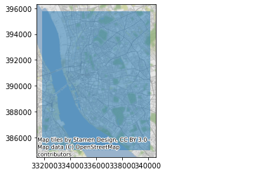

Explore the mosaic¶
This section contains examples to work with the entire mosaic of Sentinel 2 we have mirrored.
import rioxarray, xarray
import geopandas, pandas
import contextily
from sklearn.preprocessing import MinMaxScaler
from shapely.geometry import box
from numpy import percentile
Extract window¶
In this example we will clip a section of the entire mosaic, transform it into true color, and plot it.
First connect to the .vrt:
r = rioxarray.open_rasterio(local_dir+"GHS-composite-S2.vrt")
r
<xarray.DataArray (band: 4, y: 182437, x: 121865)>
[88930740020 values with dtype=uint16]
Coordinates:
* band (band) int64 1 2 3 4
* y (y) float64 1.612e+06 1.612e+06 ... -2.136e+05 -2.136e+05
* x (x) float64 -2.228e+05 -2.228e+05 ... 9.968e+05 9.968e+05
spatial_ref int64 0
Attributes:
_FillValue: 0.0
scale_factor: 1.0
add_offset: 0.0
grid_mapping: spatial_refxarray.DataArray
- band: 4
- y: 182437
- x: 121865
- ...
[88930740020 values with dtype=uint16]
- band(band)int641 2 3 4
array([1, 2, 3, 4])
- y(y)float641.612e+06 1.612e+06 ... -2.136e+05
array([1612232.376629, 1612222.368727, 1612212.360825, ..., -213549.231322, -213559.239224, -213569.247126]) - x(x)float64-2.228e+05 -2.228e+05 ... 9.968e+05
array([-222818.73324 , -222808.725338, -222798.717436, ..., 996764.229958, 996774.23786 , 996784.245762]) - spatial_ref()int640
- crs_wkt :
- PROJCRS["OSGB 1936 / British National Grid",BASEGEOGCRS["OSGB 1936",DATUM["OSGB 1936",ELLIPSOID["Airy 1830",6377563.396,299.3249646,LENGTHUNIT["metre",1]]],PRIMEM["Greenwich",0,ANGLEUNIT["degree",0.0174532925199433]],ID["EPSG",4277]],CONVERSION["unnamed",METHOD["Transverse Mercator",ID["EPSG",9807]],PARAMETER["Latitude of natural origin",49,ANGLEUNIT["degree",0.0174532925199433],ID["EPSG",8801]],PARAMETER["Longitude of natural origin",-2,ANGLEUNIT["degree",0.0174532925199433],ID["EPSG",8802]],PARAMETER["Scale factor at natural origin",0.9996012717,SCALEUNIT["unity",1],ID["EPSG",8805]],PARAMETER["False easting",400000,LENGTHUNIT["metre",1],ID["EPSG",8806]],PARAMETER["False northing",-100000,LENGTHUNIT["metre",1],ID["EPSG",8807]]],CS[Cartesian,2],AXIS["easting",east,ORDER[1],LENGTHUNIT["metre",1]],AXIS["northing",north,ORDER[2],LENGTHUNIT["metre",1]],ID["EPSG",27700]]
- semi_major_axis :
- 6377563.396
- semi_minor_axis :
- 6356256.909237285
- inverse_flattening :
- 299.3249646
- reference_ellipsoid_name :
- Airy 1830
- longitude_of_prime_meridian :
- 0.0
- prime_meridian_name :
- Greenwich
- geographic_crs_name :
- OSGB 1936
- horizontal_datum_name :
- OSGB 1936
- projected_crs_name :
- OSGB 1936 / British National Grid
- grid_mapping_name :
- transverse_mercator
- latitude_of_projection_origin :
- 49.0
- longitude_of_central_meridian :
- -2.0
- false_easting :
- 400000.0
- false_northing :
- -100000.0
- scale_factor_at_central_meridian :
- 0.9996012717
- spatial_ref :
- PROJCRS["OSGB 1936 / British National Grid",BASEGEOGCRS["OSGB 1936",DATUM["OSGB 1936",ELLIPSOID["Airy 1830",6377563.396,299.3249646,LENGTHUNIT["metre",1]]],PRIMEM["Greenwich",0,ANGLEUNIT["degree",0.0174532925199433]],ID["EPSG",4277]],CONVERSION["unnamed",METHOD["Transverse Mercator",ID["EPSG",9807]],PARAMETER["Latitude of natural origin",49,ANGLEUNIT["degree",0.0174532925199433],ID["EPSG",8801]],PARAMETER["Longitude of natural origin",-2,ANGLEUNIT["degree",0.0174532925199433],ID["EPSG",8802]],PARAMETER["Scale factor at natural origin",0.9996012717,SCALEUNIT["unity",1],ID["EPSG",8805]],PARAMETER["False easting",400000,LENGTHUNIT["metre",1],ID["EPSG",8806]],PARAMETER["False northing",-100000,LENGTHUNIT["metre",1],ID["EPSG",8807]]],CS[Cartesian,2],AXIS["easting",east,ORDER[1],LENGTHUNIT["metre",1]],AXIS["northing",north,ORDER[2],LENGTHUNIT["metre",1]],ID["EPSG",27700]]
- GeoTransform :
- -222823.73719089525 10.007902079383749 0.0 1612237.380579703 0.0 -10.007902079383749
array(0)
- _FillValue :
- 0.0
- scale_factor :
- 1.0
- add_offset :
- 0.0
- grid_mapping :
- spatial_ref
Now get a box for Liverpool:
bb = box(331825, 385032, 340167, 395756)
ax = geopandas.GeoSeries([bb], crs="EPSG:27700").plot(alpha=0.5)
contextily.add_basemap(ax, crs="EPSG:27700");

%time sub = r.sel(band=[1, 2, 3]).rio.clip_box(*bb.bounds)
sub
CPU times: user 74.2 ms, sys: 0 ns, total: 74.2 ms
Wall time: 71.9 ms
<xarray.DataArray (band: 3, y: 1072, x: 834)>
[2682144 values with dtype=uint16]
Coordinates:
* band (band) int64 1 2 3
* y (y) float64 3.958e+05 3.957e+05 3.957e+05 ... 3.85e+05 3.85e+05
* x (x) float64 3.318e+05 3.318e+05 ... 3.402e+05 3.402e+05
spatial_ref int64 0
Attributes:
scale_factor: 1.0
add_offset: 0.0
grid_mapping: spatial_ref
_FillValue: 0xarray.DataArray
- band: 3
- y: 1072
- x: 834
- ...
[2682144 values with dtype=uint16]
- band(band)int641 2 3
array([1, 2, 3])
- y(y)float643.958e+05 3.957e+05 ... 3.85e+05
- axis :
- Y
- long_name :
- y coordinate of projection
- standard_name :
- projection_y_coordinate
- units :
- metre
array([395751.863075, 395741.855173, 395731.847271, ..., 385053.415753, 385043.40785 , 385033.399948]) - x(x)float643.318e+05 3.318e+05 ... 3.402e+05
- axis :
- X
- long_name :
- x coordinate of projection
- standard_name :
- projection_x_coordinate
- units :
- metre
array([331829.207902, 331839.215804, 331849.223706, ..., 340145.77453 , 340155.782432, 340165.790334]) - spatial_ref()int640
- crs_wkt :
- PROJCRS["OSGB 1936 / British National Grid",BASEGEOGCRS["OSGB 1936",DATUM["OSGB 1936",ELLIPSOID["Airy 1830",6377563.396,299.3249646,LENGTHUNIT["metre",1]]],PRIMEM["Greenwich",0,ANGLEUNIT["degree",0.0174532925199433]],ID["EPSG",4277]],CONVERSION["unnamed",METHOD["Transverse Mercator",ID["EPSG",9807]],PARAMETER["Latitude of natural origin",49,ANGLEUNIT["degree",0.0174532925199433],ID["EPSG",8801]],PARAMETER["Longitude of natural origin",-2,ANGLEUNIT["degree",0.0174532925199433],ID["EPSG",8802]],PARAMETER["Scale factor at natural origin",0.9996012717,SCALEUNIT["unity",1],ID["EPSG",8805]],PARAMETER["False easting",400000,LENGTHUNIT["metre",1],ID["EPSG",8806]],PARAMETER["False northing",-100000,LENGTHUNIT["metre",1],ID["EPSG",8807]]],CS[Cartesian,2],AXIS["easting",east,ORDER[1],LENGTHUNIT["metre",1]],AXIS["northing",north,ORDER[2],LENGTHUNIT["metre",1]],ID["EPSG",27700]]
- semi_major_axis :
- 6377563.396
- semi_minor_axis :
- 6356256.909237285
- inverse_flattening :
- 299.3249646
- reference_ellipsoid_name :
- Airy 1830
- longitude_of_prime_meridian :
- 0.0
- prime_meridian_name :
- Greenwich
- geographic_crs_name :
- OSGB 1936
- horizontal_datum_name :
- OSGB 1936
- projected_crs_name :
- OSGB 1936 / British National Grid
- grid_mapping_name :
- transverse_mercator
- latitude_of_projection_origin :
- 49.0
- longitude_of_central_meridian :
- -2.0
- false_easting :
- 400000.0
- false_northing :
- -100000.0
- scale_factor_at_central_meridian :
- 0.9996012717
- spatial_ref :
- PROJCRS["OSGB 1936 / British National Grid",BASEGEOGCRS["OSGB 1936",DATUM["OSGB 1936",ELLIPSOID["Airy 1830",6377563.396,299.3249646,LENGTHUNIT["metre",1]]],PRIMEM["Greenwich",0,ANGLEUNIT["degree",0.0174532925199433]],ID["EPSG",4277]],CONVERSION["unnamed",METHOD["Transverse Mercator",ID["EPSG",9807]],PARAMETER["Latitude of natural origin",49,ANGLEUNIT["degree",0.0174532925199433],ID["EPSG",8801]],PARAMETER["Longitude of natural origin",-2,ANGLEUNIT["degree",0.0174532925199433],ID["EPSG",8802]],PARAMETER["Scale factor at natural origin",0.9996012717,SCALEUNIT["unity",1],ID["EPSG",8805]],PARAMETER["False easting",400000,LENGTHUNIT["metre",1],ID["EPSG",8806]],PARAMETER["False northing",-100000,LENGTHUNIT["metre",1],ID["EPSG",8807]]],CS[Cartesian,2],AXIS["easting",east,ORDER[1],LENGTHUNIT["metre",1]],AXIS["northing",north,ORDER[2],LENGTHUNIT["metre",1]],ID["EPSG",27700]]
- GeoTransform :
- 331824.2039506315 10.007902079383705 0.0 395756.8670264495 0.0 -10.00790207938358
array(0)
- scale_factor :
- 1.0
- add_offset :
- 0.0
- grid_mapping :
- spatial_ref
- _FillValue :
- 0
With this, we can rescale it using scikit-learn preprocessing tools and visualise it:
%%time
def minmax(a,
bottom=0,
top=255,
min_cut=2.5,
max_cut=98.5
):
vals = a.to_series().values
min_bin = percentile(vals, min_cut)
max_bin = percentile(vals, max_cut)
a = xarray.where(a > max_bin, max_bin, a)
a = xarray.where(a < min_bin, min_bin, a)
a_std = (a - a.min()) / (a.max() - a.min())
a_scaled = a_std * (top - bottom) + bottom
return a_scaled.astype(int)
sub.groupby("band")\
.map(minmax)\
.plot.imshow(figsize=(12, 12));
CPU times: user 223 ms, sys: 0 ns, total: 223 ms
Wall time: 220 ms
<matplotlib.image.AxesImage at 0x7f70a2122c40>
Alternative, sklearn-based (but slower because of reshaping required:
%%time
def chopper(s, cutoff=0.98):
scut = pandas.qcut(s, [0, cutoff, 1])
return None
scaler = MinMaxScaler(feature_range=(0, 255))
ssub = sub.to_series()\
.unstack(level="band")
scaled = scaler.fit_transform(ssub)
scaled = pandas.DataFrame(scaled.astype(int),
columns=pandas.Index([1, 2, 3],
name="band"
),
index=ssub.index
)
scaled = xarray.DataArray.from_series(scaled.stack())
CPU times: user 5.48 s, sys: 0 ns, total: 5.48 s
Wall time: 5.48 s